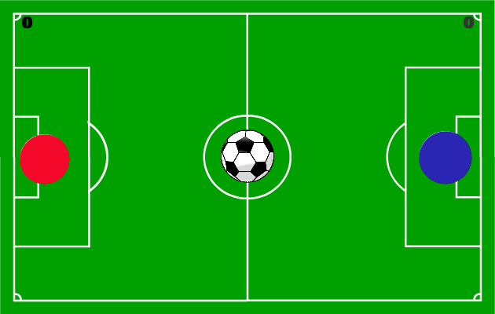

|
Ruby Clicker is an incremental game. The player clicks on the ruby and from that, earn currency. The player can now choose to purchase upgrades which ‘mines’ gems for you. These sources increase the currency production rate and all upgrades stack on top of each other. Ruby Clicker was mainly developed in the early stages of the company. This game will still receive updates to improve gameplay and content. |
|  | Score It! Is a 2 player football game. One player controls the red character and another player controls a blue character. The aim of the game is to score in the opponents goal. Whoever reaches 10 goals first, is crowned champion. This game tends to get very intense between the two competitors. This game will still receive updates to improve gameplay and content. |